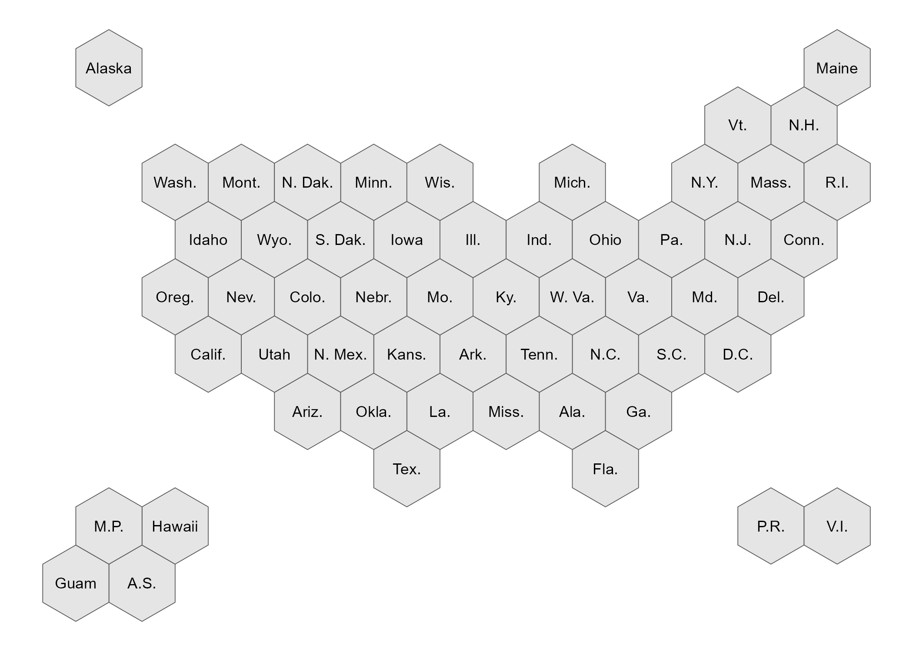

This is a simple packages that includes hex maps of the United States with multiple options of different geographies. Other hex maps available for public use only have the 50 states + DC: R Graph Gallery and Datawrapper. The CDC Open-Source Visualization Editor (COVE) puts hexagons in a line at the bottom of the 50 states + DC hex map to account for territories and freely associated states. However, the coordinates provided in the json file available on cdc-open-vis GitHub only has the 50 states + DC.
The benefit of the usahex is that it includes hex maps with territories and freely associated states.
Why hex maps?
- clear way to display information on a geography basis
- most choropleth maps are not using metrics related to land size; traditional lat/long maps over-emphasize large-land geographies and under-emphasize small-land geographies
- hex maps allow enough space for each geography to have id label and value label
R Installation
usahex uses the sf package (sf = simple features) to create shape objects that are easy to plot using the ggplot2 package, my preferred medium for data visualizations.
# install.packages("devtools")
devtools::install_github("mareichler/usahex")Getting Started
allgeos <- get_coordinates(map = "usa59", coords = "hexmap") |>
ggplot() +
geom_sf(aes(fill = geo_type)) +
geom_sf_text(aes(label = abbr_usps), size = 3.5) +
theme_void()
allgeos
Don’t Use R?
geojson files
These files can be found in the data-raw/geojson folder on GitHub.
geojson <- "https://raw.githubusercontent.com/MarEichler/usahex/refs/heads/main/data-raw/geojson/usa56.geojson"
df <- sf::read_sf(geojson)
gggeojson <- ggplot(df) +
geom_sf() +
geom_sf_text(aes(label = abbr_gpo), size = 3) +
theme_void()
gggeojson
CVS Files
These files can be found in the data-raw/csv folder on GitHub.
csv <- "https://raw.githubusercontent.com/MarEichler/usahex/refs/heads/main/data-raw/csv/usa53.csv"
read.csv(csv)[1:14,c(2,6, 10:13)]## abbr_usps abbr_long X Y cX cY
## 1 AL Alab. 278.01270 -180 278.01270 -200
## 2 AL Alab. 295.33321 -190 278.01270 -200
## 3 AL Alab. 295.33321 -210 278.01270 -200
## 4 AL Alab. 278.01270 -220 278.01270 -200
## 5 AL Alab. 260.69219 -210 278.01270 -200
## 6 AL Alab. 260.69219 -190 278.01270 -200
## 7 AL Alab. 278.01270 -180 278.01270 -200
## 8 AK Alaska 35.52559 0 35.52559 -20
## 9 AK Alaska 52.84610 -10 35.52559 -20
## 10 AK Alaska 52.84610 -30 35.52559 -20
## 11 AK Alaska 35.52559 -40 35.52559 -20
## 12 AK Alaska 18.20508 -30 35.52559 -20
## 13 AK Alaska 18.20508 -10 35.52559 -20
## 14 AK Alaska 35.52559 0 35.52559 -20The X and Y coordinates are the 7 coordinates for each state that create the hexagon. The cX and cY are repeated center coordinates that create a single point in the center of the given hexagons. These raw files can also be used to create ggplot2 items if you don’t want to work with simple features (sf) objects:
df <- read.csv(csv)
# only need 1coord per state
labels <- dplyr::distinct(dplyr::select(df, -c(X, Y)))
ggcsv <- ggplot(df, aes(group=abbr_usps)) +
geom_polygon(aes(x=X, y=Y), color = "white", fill = "grey35") +
geom_text(
data=labels,
aes(label=abbr_long, x = cX, y = cY),
size = 3,
color = "white"
) +
coord_fixed() +
theme_void()
ggcsvOriginal Coordinates Source
Back during covid times, NPR used hex maps (that included US territories) to show different covid related metrics. I reached out to Alyson Hurt, Supervising Graphics Editor who pointed me to the dailygraphics-templates file on GitHub that contained the coordinates for the map. I’ve made some small adjustments, moving some of the pacific island hexagons around and adding new hexagons to account for freely associated states; but these coordinates are the basis for all of the maps in this package. The y values have been reversed so that the plot is not upside down.